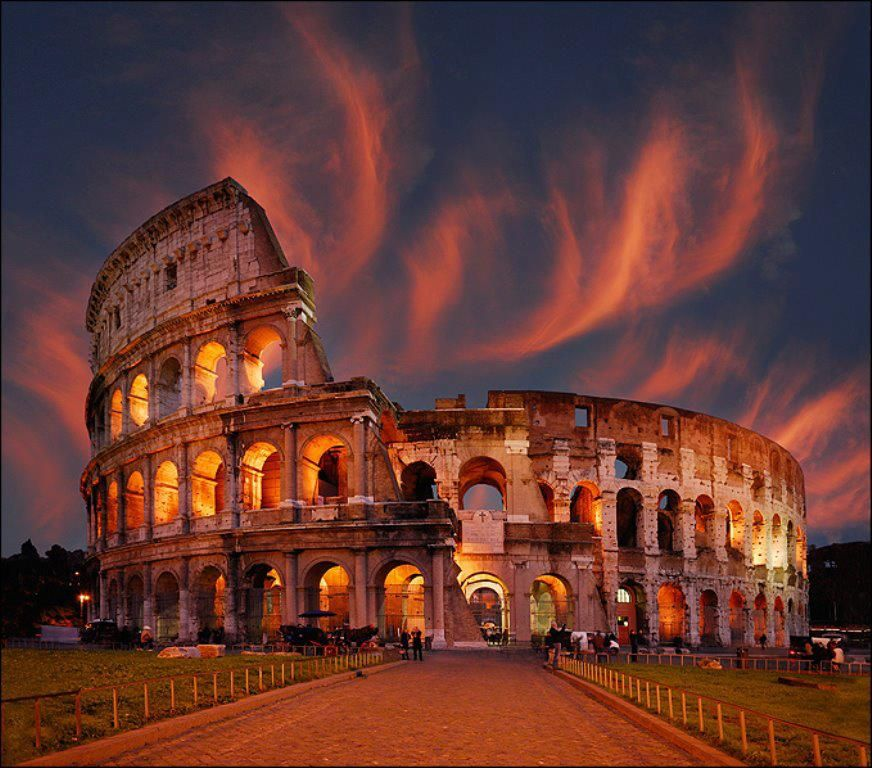
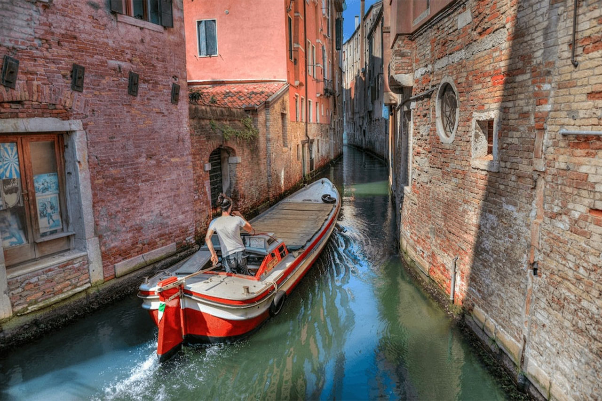

WELCOME TO ITALY

Italy Through the Ages
- Ancient Italy and Rome: Before Rome, Italy was home to groups like the Etruscans and Greeks. Rome grew from a kingdom into a republic and later a powerful empire.
- Middle Ages: After the fall of Rome, Italy broke into city-states and kingdoms. Cities like Venice and Florence became rich trade centers.
- Renaissance: Italy became the birthplace of the Renaissance. Artists like Leonardo da Vinci and Michelangelo transformed art and science.
- Unification: In the 1800s, Italy unified into one nation during the Risorgimento. Rome became the capital in 1870.
- Modern Era: After World War II, Italy became a republic and is famous for culture, fashion, and history.
Famous Sights
The Colosseum (Rome)
The Colosseum is a massive ancient arena built nearly 2,000 years ago. It hosted gladiator fights and public events and remains one of the world’s most famous landmarks.
Venice Canals (Venice)
Venice’s canals replace roads and are traveled by gondolas and boats. They create the city’s unique and romantic atmosphere.
Leaning Tower of Pisa (Pisa)

The Leaning Tower of Pisa is famous worldwide for its unintended tilt and stunning Romanesque design.
Italian food
- Pizza (Neapolitan style)
Originating in Naples, this pizza features a thin, soft crust with fresh tomato, mozzarella, and basil. It is considered one of Italy’s most famous culinary exports. - Pasta Carbonara
This Roman dish is made with eggs, pecorino cheese, pancetta, and black pepper. Its creamy texture comes from the sauce, not cream, giving it a rich, authentic flavor. - Gelato
Italian gelato is creamier and denser than regular ice cream, with intense flavors. It is a popular treat in cities and small towns across Italy.
Tips for travelers
- Learn basic Italian phrases – Simple words like “ciao” (hello), “grazie” (thank you), and “per favore” (please) go a long way. Italians appreciate when visitors make an effort
- Carry cash – Many small cafes, markets, and historic sites prefer cash over cards. ATMs are widely available, but some places don’t take credit cards.
- Respect the culture – Italians take meal times and coffee rituals seriously. Don’t rush lunch or expect to eat dinner very late in smaller towns.